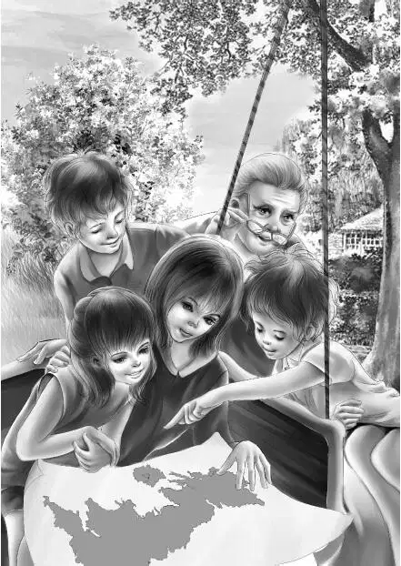

Chapter 1 Benny’s Plan
这是六月暑假里炎热的一天，太阳还没有下山，此时，奥登一家吃过晚饭，正坐在房前的门廊里看书。
“天色还早，还可以看上一会儿！”班尼说着，拿起自己最心爱的书，朝角落里最喜欢的位子走了过去。他的两个姐姐——杰西和维莉已经坐在了门廊里的秋千上。老大亨利刚刚从大学放假回家，此时正坐在一把安乐椅上，爷爷则在另外一把安乐椅上。
爷爷无意间抬头看了看，发现班尼的心思并不在书上，只见他两眼直视着前方，却不知在看些什么。
“怎么了，班尼？”奥登先生问道。
“我在想事情。”班尼保持着原来的姿势。
“想什么事情呢，小老弟？”亨利问道，“是不是很重要？”
“也没什么重要的。”班尼的目光仍然没有回到书上来。
“可以跟我们说说啊！”姐姐杰西说道，“准是很有意思的事情。”
“说嘛，班尼。”维莉也补充了一句。
“好吧。”班尼让步了，“我想起了迈克说过的一些话。”
“哦？你的朋友迈克？”亨利问道，“他说了些什么？”
“倒也没什么。”班尼回答道，“不过让我总是忍不住去想。他说奥登家的人总能在假期里过得很愉快，不论咱们去哪儿，总是过得惊险又刺激。”
“迈克说得没错啊！”维莉赞同道。
“嗯。”班尼看着维莉，“我也跟迈克说过，他的话对极了。可他却说，那是因为咱们还没去过北部海边的一个小镇——他爸爸最喜欢在那儿钓鱼。他说那里除了小渔村外，什么都没有，哪怕咱们过去了，也碰不上什么新鲜刺激的事情——就算是奥登一家也不例外。”
爷爷很快便看穿了班尼的心思，他笑着问道：“我猜，你一定是想去那个小渔村感受一下吧？”
班尼转过头，望向爷爷：“想不到天下还会有这么无聊的地方——我觉得听上去还蛮有意思的。”
“我也想象不到，班尼。”奥登先生说，“咱们一家人应该不会觉得无聊的——永远不会。想不想去那儿待上一阵子？暑假还剩下一半时间，回来还可以去别的地方。”
“噢，我想起来了！”杰西叫道，“这个暑假，您早就计划好了，对吧爷爷？”
“我的计划可以推迟一下。”奥登先生说着，笑了起来。
“去无聊的镇子转转，也蛮有趣的。”杰西说，“它是紧靠海边吗？”
“是的。”班尼说，“要是赶上涨潮，那儿就会变成四面环水的孤岛。要是赶上落潮，等海水退了以后，就会露出一条岩石和卵石铺成的车道，咱们可以开车过去，也可以走过去。不过迈克说，除了一些避暑的游客外，平时很少有人到岛上去。”
“估计避暑的游客也不太多吧。”亨利说。
“游客都住在哪儿呢？”维莉问道。
“只有一个地方可以住。”班尼答道，“好像是个乡村旅馆，只有六个房间，专门供夏天去钓鱼的——比如迈克爸爸这种游客住的。村子很小，只有一栋校舍和一间商店，连邮局都没有，再就是一些村居，以及村民们工作的沙丁鱼罐头厂之类的，就没其他什么了。”

爷爷的目光在孩子们身上环视了一圈：“要是你们都想去的话，我就开始做动身的准备了。不过有个前提，那就是必须所有人同意才行。”
“我们当然同意，爷爷。”亨利说道，“要是能证明迈克老弟的话是错的，那该多有趣！咱们一家人不管到哪里都会找到乐趣的。”
“那就让迈克拭目以待吧！”班尼说。
“再说，村子里的人一直跟外界隔绝，研究起来也蛮有趣的。说不准，我还可以写篇论文呢！”亨利说。
“那村子叫什么名字？”爷爷问道，“说不定我还去那儿钓过鱼。”
“可不是么，您知道好多地方呐！”班尼说，“那地方叫伊丽莎白港。”
奥登先生摇了摇头：“这个倒真没听说过。咱们可以在地图上找找，应该不会太远。”
维莉跑进屋子，很快又跑了回来，手里拿着一本地图。
“你来找找看。”爷爷说。
“在这儿呢。”维莉叫了起来，“那肯定是个很小的地方，就连名字都印得这么小。看，这里就是小岛，附近只有一个镇子，叫北港镇。”
亨利看了眼地图，说道：“看起来，小岛离北港镇大约30英里。镇子肯定也大不到哪里去。”
“至少比伊丽莎白港大。”杰西说，“咱们或许可以在北港镇买食物之类的。”
“也可以带些东西过去。”爷爷说。
班尼不禁哈哈大笑起来：“真没想到，爷爷竟然也要去迈克说的那个村子。我好想看看，咱们这次的经历会让迈克吃惊成什么样子。”
“我也想看看。”亨利赞同道，“等咱们回来以后，班尼你就告诉迈克，咱们玩得有多开心。”
“你们好像很肯定，这次的旅行会非同凡响。”爷爷的眼睛闪闪发亮，“可万一真像迈克说的那么无聊，那可怎么办？”
“不管怎样，咱们过去看看再说。”杰西说道，“要是真的无聊，我们也不会介意的。”
“我要带上水彩，我最喜欢画大海了。”维莉说。
亨利冲班尼眨了眨眼：“咱们也要找点事情做才行，至少随时都可以去钓钓鱼。”
刚刚过了一周，亨利便驾驶着旅行车，开进了伊丽莎白港的小渔村，此时潮水已退，而一切正如迈克所说：村里有家旅馆，是个只有六个房间的老店。另外，岛上还有一栋校舍和一间小商店——商店的老板是芬顿先生，旅馆也是他开的。之前订房的时候，他们通过电话。
“咱们先去商店吗？”亨利问道。
“是的，钥匙一定在芬顿先生手里，咱们不妨先过去，让他知道咱们已经到了。”爷爷说，“希望这儿的床铺会舒服些。”
芬顿先生打开第一扇房门时，所有人都有些吃惊：他们没想到，这里竟然如此的温馨。屋子里放着两张舒适的床，地上没有铺地毯，只有床前放着两块手工小皮毯。
“好极了！非常好！”奥登先生一边说，一边冲着旅馆老板点点头，“一看就知道，我们在这儿会很享受的。”
“好精致，”维莉赞同道，“真是太合我们的意了！”
“再看看这个。”芬顿先生说，“一般情况下，我是不会给客人展示的——看，这里还有间厨房。”
说着，他来到走廊尽头，打开了一扇门。
果然是间小厨房。
厨房中央摆着一张大桌子，水槽和炉子看起来有些老旧，不过电冰箱却很新，橱柜里放满了盘子。
“还好有厨房给你们用。”芬顿先生说道，“伊丽莎白港没有餐厅，想要出去吃东西，只能到北港去，那要跑30英里路呢。”
“噢，您真是太好了。”杰西欢呼道，“有了这个厨房，我们就什么也不缺了。”
“你们会做饭？”芬顿先生问道。
“孩子们都会做，就连班尼也不例外。”奥登先生笑了起来，“就像我常说的，就算什么食材都没有，他们都能变出佳肴来。”
“不错。”芬顿先生说，“我一看就知道，你们很会照顾自己——我看人向来很准，很少出错，所以才向你们展示了厨房。”
“我们今天带了晚餐来，”班尼说，“因为不知道这里有厨房。”
“没关系。”芬顿先生说，“你们大老远开车过来，肯定累了。可以早点上床，明天再动手做饭啊！”
“不过我们想先开车转转，到镇里去看一看。”奥登先生说。
“那你们不用开多久，”芬顿先生笑了起来，“这地方可小得很呢。”
亨利开着车，沿着海边的沙路缓缓地行驶着，海面上屹立着两个码头，远处便是沙丁鱼罐头厂，不过工厂这天没开工，附近只泊着几艘小船。工厂后面是高高的山崖，崖顶上有一栋美丽豪华的老房子。
“我真想知道是什么人住在里面。”班尼感叹道，“这房子好大，里面肯定住着一大家子人，我猜起码有20间房吧！”
“我觉着像古老的家族庄园。”爷爷猜测道，“房子看起来肯定不是最近新建的，而且也封闭起来了。”
事实上，这栋房子并没有封闭，奥登一家人后来才知道。
小路在悬崖附近绕了个弯，经过商店和一排民居后，又回到了旅馆方向。大家能看到的都已经看过，现在就只差那栋校舍了。
学校和旅馆之间隔着葱郁的树林和茂密的灌丛。校舍曾被漆成白色，但油漆大半已脱落，房顶的钟楼里吊着一口大钟。
“听啊！”班尼问道，“是不是学校的钟声响了？”
“噢，班尼！”杰西说，“你的想象力太丰富了！”
维莉仔细地看了看校舍，感叹道：“这所学校好小！而且，那个大烟囱的形状好奇怪啊！”
学校果真像维莉描述的一样。
“镇子都转完了，就只有这些。”爷爷说道，“也许迈克说得没错，班尼，这里的确很无聊。”
“也许吧。”班尼说，“可咱们还没待多久呢。管它的，我现在都饿了。”
“不太可能吧。”杰西说着，看了看手表，抬头惊呼道，“都五点半了！我还以为才三点左右。”
“午饭都已经吃过很久啦！”亨利说，“咱们先把行李打开放好，准备吃晚饭吧。”
两个女孩都十分高兴，她们把草篮放在厨房的餐桌上，打开后，从里面拿出了鸡肉三明治、咸菜、奶酪、炸饼圈，还有土豆条。班尼又跑到商店里买了些冰镇牛奶。
爷爷还没来得及打开行李，就听见维莉在喊：“吃饭啦！”
孩子们坐在了长长的木凳上，爷爷坐在桌首的椅子上。
“这倒是让我想起奇异岛来了。”亨利说，“只不过当时咱们没有像样的桌子，只用两个木桶架了一块木板而已。”
“有件事倒是一模一样的。”班尼叫道，“那就是——我饿坏啦！咱们赶紧开吃吧！”
大家似乎都饿了，很快吃完了所有的食物。接下来，两个男孩和两个女孩各自回屋收拾行李，爷爷则独自住在一间大房里。
旅馆离海边很近，惊涛拍岸的声音让入睡变得不那么容易，不过片刻之后，大家就适应了，很快便进入了梦乡。
奥登一家人此时还不知道，他们很快就会遇到一位好朋友，同时也会遇到些很不友好的人。